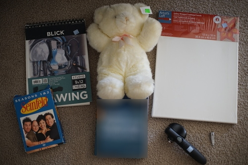

I know you are all very curious about what I've been doing lately. the answer is: tearing dandelions out of my lawn. my lawn was extremely yellow this year and i've been going back at it every few days and tearing more and more and more out. im like half done!!! there's an INSANE amount of dandelions and i wasnt even able to get them all out before they turned into puffballs!! i hate these d*ng weeds

i added some more pokemon to my pokemon page. my favorite is the darumaka (seen here)! some of them are of variable quality but i think they're all fun. they're all gouache painted. a few of them i made the mistake of using water soluble pens for the lines and they really bled out! its fun though! theyre so goofy
Ryan's
I saw one sold on ebay for $90 and i couldnt leave him again...
written by a professor I had a few years ago. he accused me of not writing the code i gave him because i wasnt able to explain it to him in person. well, i did not steal that code but i did steal his textbook. well, i paid for it now.
should i paint a wooper or a rotom on this?
this is AWESOME please bring me some cans!! i want to open them!
finally i own steppin out!!!! i would have rather bought the original album but ill take this
from kyoto!
i think it's just light sensitive paper. seems like fun
These really look like someone put some effort into making them
Ryan's
Ryan's... but I want to play with them too...
Ryan's
Ryan's. they're like quilted velour. who the fr*ck bought these originally
Will ryan ever have enough of these??
here's a couple quick reviews of some of the CDs ive bought lately. ive been listening to two basically on repeat so there's a lot i dont have much to say about yet
I think ive listened to this one at least 5 times now. its my favorite of the set. i had a mix CD with Crazy on it back in the day and it's good to hear it again. i didnt originally like Killer, but i'm into it now
they're all greatest hits so of course theyre all good. live songs drive me nuts, but there's only one to live through. i misheard "its a mistake" as "midsummer's day". feel free to also mishear it
i didnt find anything about this album to be special
their style is very consistent so if you like don't you forget about me the rest of this sounds pretty much the same
nothing has stood out yet. inoffensive
I finished Do Androids Dream of Electric Sheep. I didn't realize how loosely Bladerunner was based off of it. It's like some chad found the book, took the most socially acceptable cool concepts and some character names out of it, and then threw 90% of the book in the trash. Everything weird in the book is like completely removed from that movie. Also Deckard was very badly cast because he is (probably) not an attractive man.